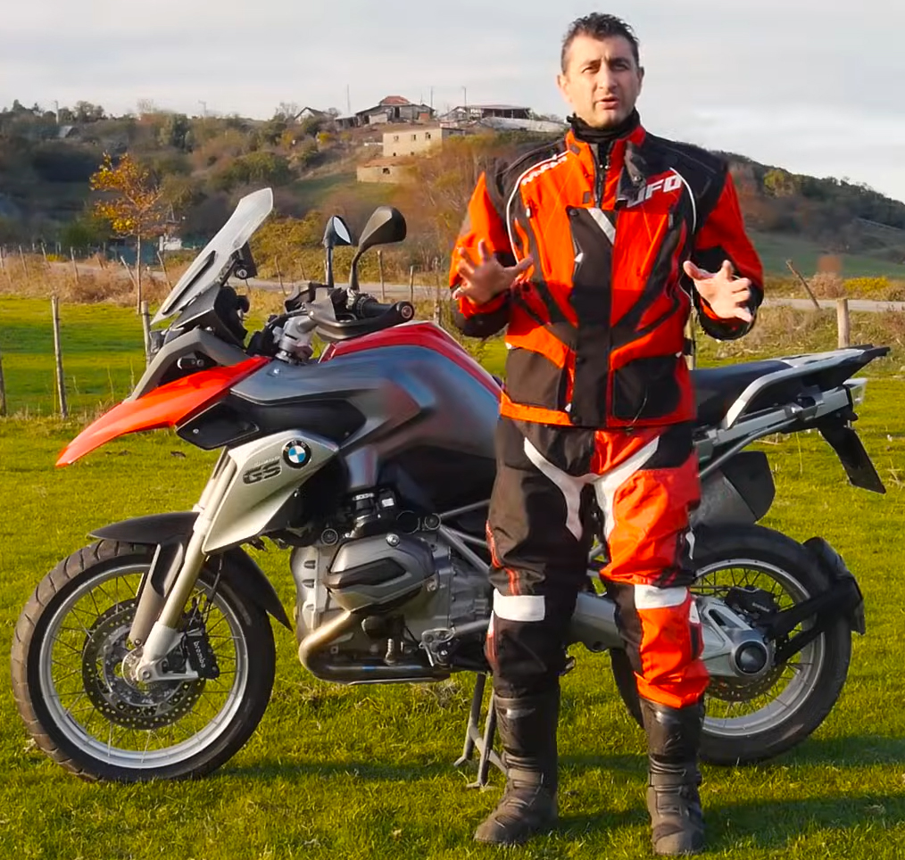

Media Legacy
Barkin Bayoğlu left behind a significant collection of video content and educational resources from his work as Altin Elbiseli Adam. His educational videos continue to be viewed and shared by riders seeking reliable information and guidance.
External Links
